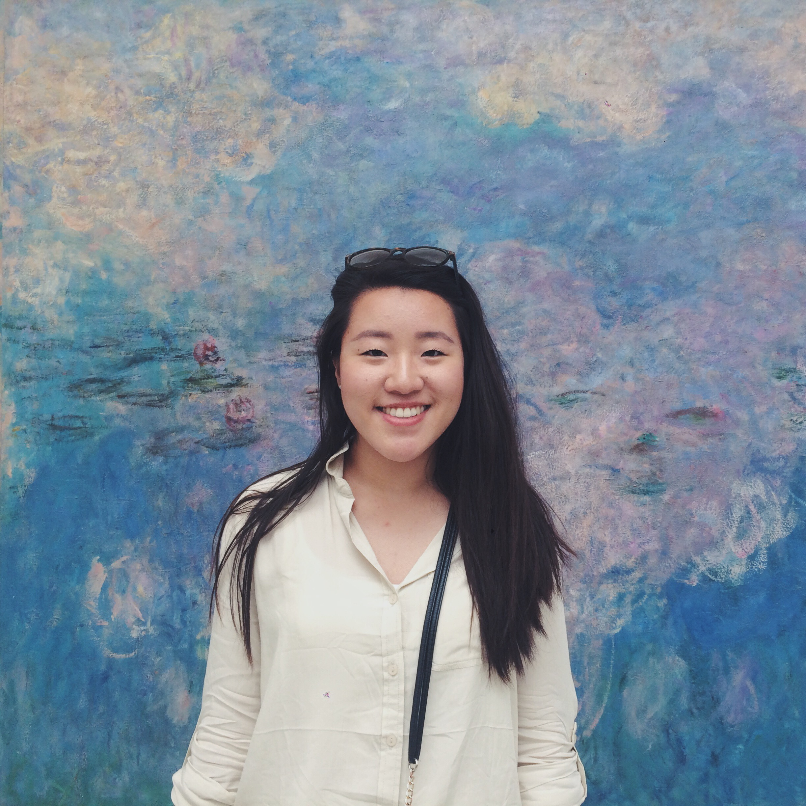
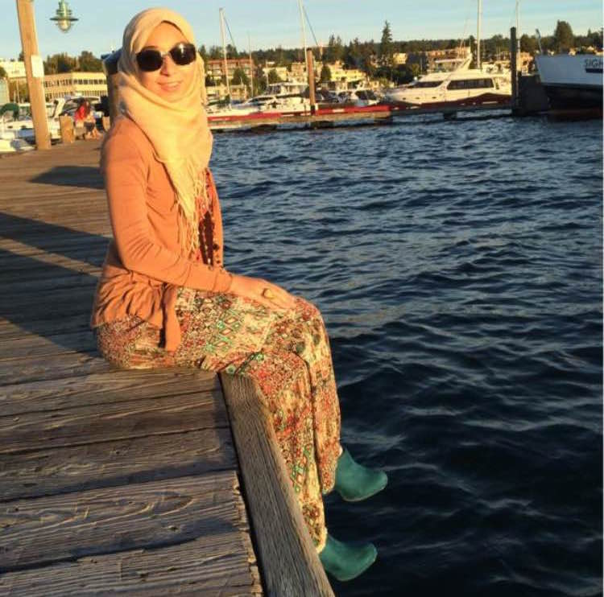
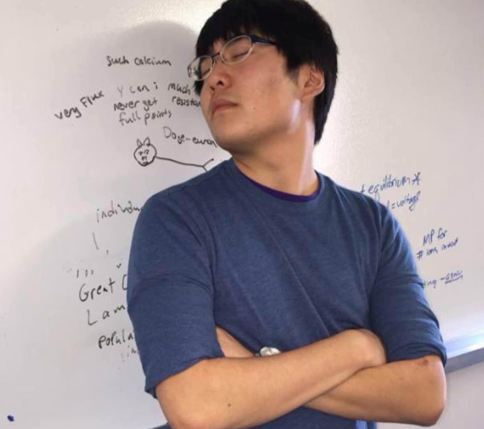
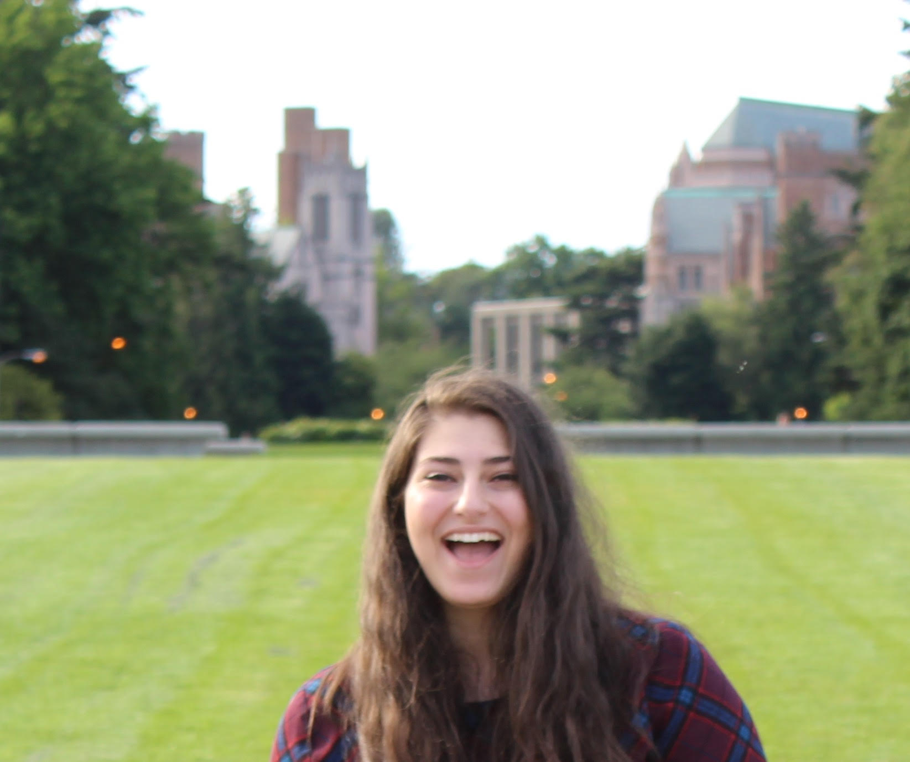
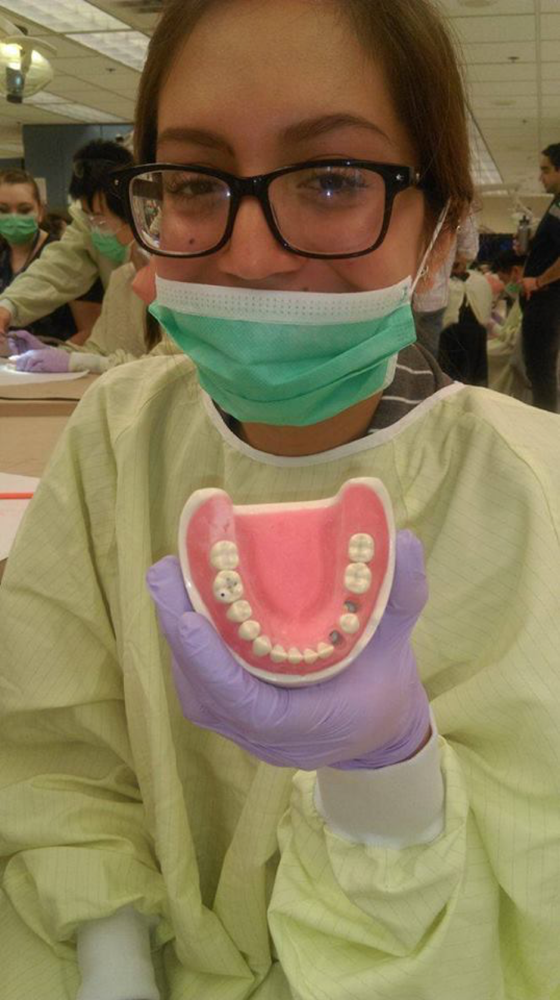
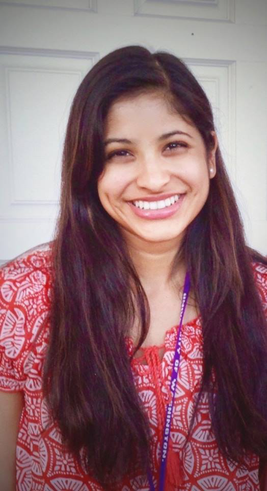
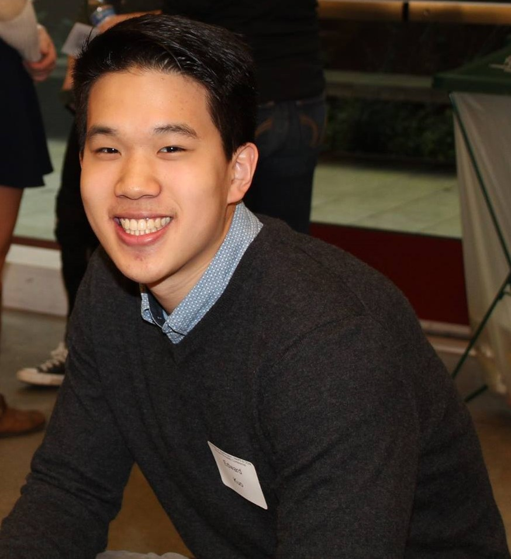
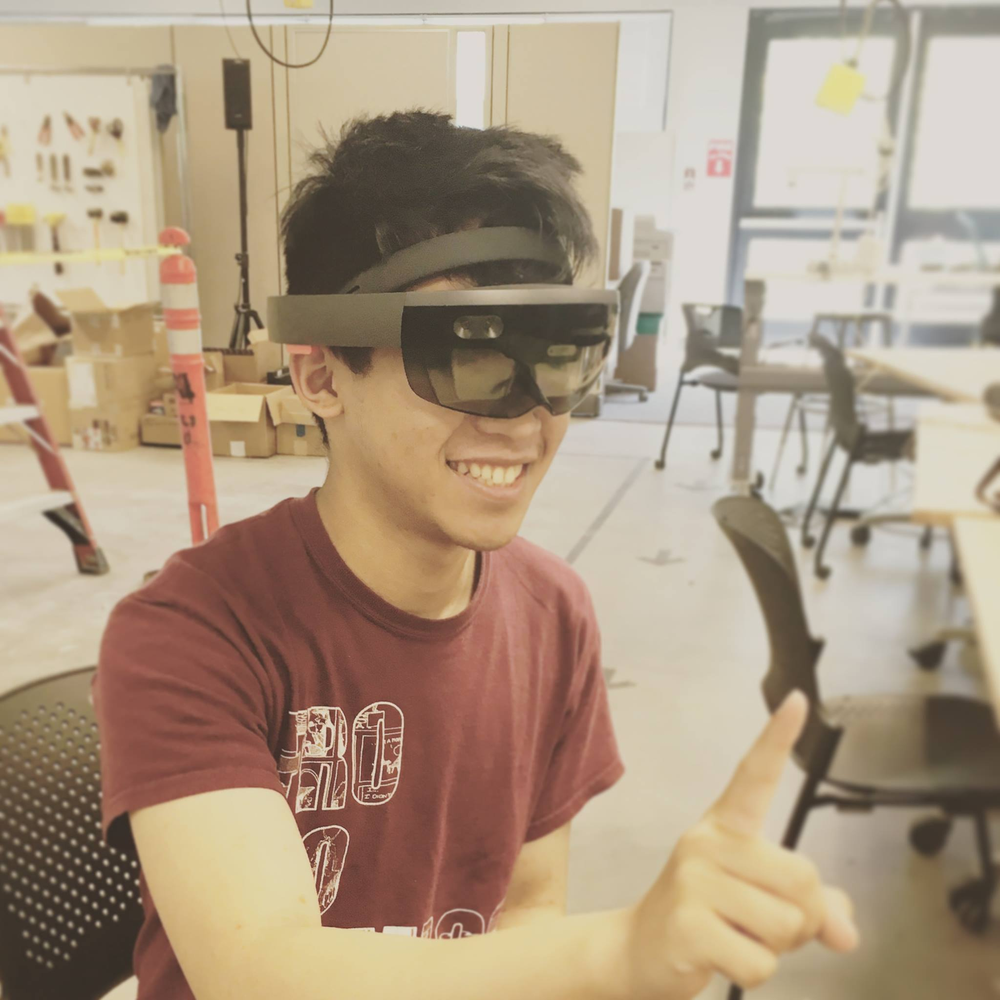

Chae MokPresident, Senior Majoring in Biochemistry |
Dina BassyiouniVice President, Senior Majoring in Medical Anthropology & Global Health, Communication |
|---|---|
|

Chae comes from the not-so-far-away town of Mukilteo. As president of DDS, Chae aspires to provide ample educational opportunities for fellow pre-dental students to learn about the field from all different angles. In doing so, she hopes to share one of the many aspects she loves about dentistry: the diverse paths that the field offers. After a summer of traveling around Europe, she has fallen in love with exploring new cultures, cuisines, and lifestyles. When she isn't getting lost in foreign countries, you can find her exploring new coffee shops around Seattle, taking pictures of cool architecture, and annoying her friends with amazing puns. Contact Chae at chaemok@uw.edu. |

My perspective of dentistry changed after an amazing dental visit and I knew right after that I wanted to become a dentist. My favorite thing about dentistry is the hand dexterity aspect and being able to get to know my patients on a personal level. I love going swimming and biking when the weather is nice. When it's not, I like to draw and paint Arabic calligraphy. Contact Dina at dinaalb@uw.edu. |
Lewis LuoTreasurer, Senior Majoring in Finance & Neurobiology |
Joelle MoussiSecretary, Senior Majoring in Microbiology |
|

Lewis is this year's Treasurer, and hopes to help DDS maximize the number of awesome events with efficient budgeting of its resources! He is a senior majoring in Neurobiology and Finance, and enjoys dentistry because of the combination of art, science, and business involved in a dental practice. He hails from the distant lands of approximately 15 miles away from UW Seattle. Lewis loves spicy food and fishing and partakes in swimming, hiking, and rowing until he gets tired and wants to quit. Contact Lewis at louislou@uw.edu. |

Joelle is a Lebanese American who was born and raised in Washington. As secretary, she plans to integrate tools used by UW into DDS, including Socrative's "mobile clicker" polling to track attendance and a Catalyst site for members to access all of our club's resources. Joelle enjoys both the clinical and research aspects of dentistry, and her passion is driven by her experience—she is an active researcher in UW's Department of Restorative Dentistry, as well as a dental assistant in both a general practice and a specialty clinic. Aside from dentistry, Joelle enjoys watching makeup tutorials and coloring. Contact Joelle at jmoussi@uw.edu. |
Stephanie CalasanzVolunteer Coordinator, Second-Year Majoring in General Biology, Human Rights Minor |
Divya MadhavanPublic Relations, Junior Majoring in Microbiology |
|

I am Stephanie Calasanz and pleased to serve as Volunteer Coordinator for the 16-17 school year! I went to Capital High School and South Puget Sound Community College in Olympia, and received my Associates in Art and Biology. My goal for DDS is to develop strong relationships in the community and allow our members to be exposed to character-building experiences, gain new skills, and be able to obtain a new perspective in life while recognizing their privileges. Dentistry is my love because it is a melting pot of things I love and look forward to - science, strong interpersonal skills, developing trusting relationships with patients, artsy and hands-on procedures, and making people smile. After having the worst teeth, orthodontic treatment helped my confidence, communication skills and allowed me to grow into my affable self. I cannot wait to have this effect on my future patients and to provide them with a smile that will bring lots of happiness and success to their lives. Contact Stephanie at calasanz@uw.edu. |

There are definitely many compelling reasons to choose dentistry as a career. Personally, shadowing at dental clinics dramatically shaped my professional goal. I realized that work can be an expression of the general intention of one’s life rather than simply an activity or a means to a certain lifestyle. I was able to identify my true passion within this field and I believe that a smile is the most precious gift you can give to a child. Contact Divya at divya14@uw.edu. |
Edward KuoActivities Coordinator, Junior Majoring in General Biology |
George SunWebmaster, Sophomore Majoring Bioengineering |
|

Interesting things about myself is that I've lived in 3 different countries: Taiwan, Canada and here in the States. One cool thing I've done this summer is I visited the east coast for the first time. In my spare time, you can find me going on runs to gas works, hiking with my friends or just sitting in my room watching Youtube. The reason why I'm excited about dentistry is the artistic aspect of the career where we get to work side by side with the patient to maintain great oral health hygiene while achieving an aesthetically pleasing smile. Contact Edward at ycekuo96@uw.edu. |

<!-- officer biography will be added later --> Contact George at gmsun@uw.edu. |